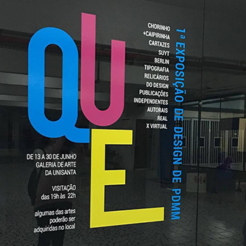
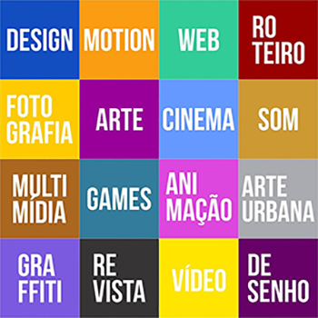

Sobre o curso
 Um dos profissionais mais requisitados pelo mundo atual é o especializado em Produção Multimídia. Aulas de design gráfico, web, animação, fotografia, desenho, cinema, games, entre outras, com ótimos professores, habilitam os alunos para o mercado de trabalho cada vez mais necessitado de uma comunicação visual completa, desde a área impressa, internet a imagens audiovisuais.
A criatividade fora da sala de aula e a interação com o público fazem parte do Curso de Produção Multimídia da Unisanta, possibilitando aos alunos o domínio das técnicas utilizadas nas mais diversas produções audiovisuais, como produção de longas e curtas-metragens, programas de TV, além de visão crítica das novas tecnologias, mídias sociais e tendências atuais na área.
O Curso da Unisanta, avaliado duas vezes pelo MEC com o conceito "Muito Bom", forma profissionais com esse perfil, por meio de disciplinas das áreas de Design Gráfico, Web Design e Vídeo Digital. Trabalhos de Final de Curso (TFCs), bem como diversas disciplinas, abrem a possibilidade de produção de material multimídia para clientes reais. Os estudantes já produziram diversos materiais para associações beneficentes e culturais, projetos com conceitos de reciclagem, sustentabilidade e com finalidades sociais.
Corpo docente especializado, com vasta experiência na área e vários professores premiados em festivais e eventos em suas áreas de atuação.
